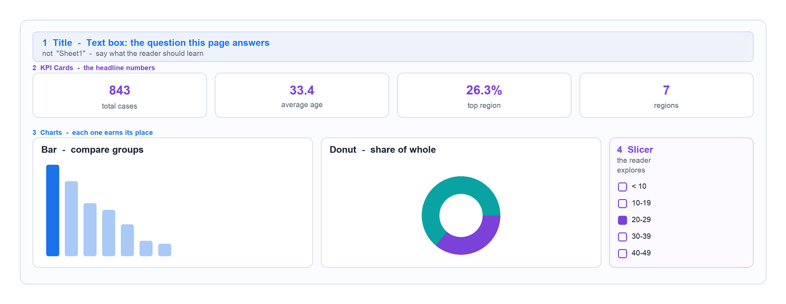
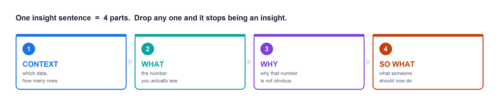

AI for Ed · สัปดาห์ที่ 8
DAX และการสร้าง Dashboard ด้วย Power BI
ทำเป็นคู่ · ใช้ Gemini เป็นผู้ช่วย
ชุดข้อมูลเดิม: Covid_Round_4_cases.xlsx · ไฟล์ Power BI เดิมจากสัปดาห์ที่ 5–6
ระบุข้อมูลผู้เรียน งานคู่ — 1 ใบงานต่อ 1 คู่
8 สัปดาห์ที่ผ่านมา เราเก็บอะไรมาบ้าง
สัปดาห์ 1Generative AI ทำงานด้วยการทายคำถัดไป · prompt = บทบาท + งาน + รูปแบบ
สัปดาห์ 2Google AI Studio · NotebookLM — ถาม–ตอบจากเอกสารของเราเอง
สัปดาห์ 3สร้างภาพและวิดีโอ · Subject + Style + Details + Lighting + Camera
สัปดาห์ 4เทียบโมเดลเร็ว/เก่ง · RFC prompt · Napkin & Gamma
สัปดาห์ 5Power BI — ชนิดข้อมูล · 4 ระดับการวิเคราะห์ · สร้างกราฟ
สัปดาห์ 6Filter · Slicer · Power Query — ทำความสะอาดข้อมูล
สัปดาห์ 7NotebookLM เป็นติวเตอร์ · RAG · ตรวจ citation
สัปดาห์ 8 — วันนี้เรียน DAX (Data Analysis Expressions) แล้วรวมทุกอย่างเป็น Dashboard 1 หน้า ที่ตอบคำถามได้ 1 ข้อ
เส้นเรื่องเดียวที่ร้อยทั้ง 8 สัปดาห์:
AI ผลิตของได้เร็วมาก — แต่ คำถามที่ถูกต้อง และ การตรวจสอบ ยังเป็นงานของเรา
วันนี้เราจะพิสูจน์ข้อนี้เป็นครั้งสุดท้าย
Gemini ช่วยได้ 2 อย่าง — และห้าม 1 อย่าง
ใช้ได้ 2 อย่าง: เขียนสูตร DAX (แล้วเราเอาไปทดสอบเอง) ·
ร่างข้อความสรุป จากตัวเลขที่ เราบอกมันไป
ห้าม 1 อย่าง: ห้ามลอกข้อความของ Gemini ไปใส่ข้อสรุปของเรา —
กิจกรรมที่ 3 จะให้เรา จับผิด ว่ามันเติมอะไรที่ข้อมูลไม่ได้บอก
⏱ วันนี้ 3 ชั่วโมง — เรียน DAX 15 นาที · ทำ Workshop 3 กิจกรรม · ส่งงานเป็น PDF 1 ไฟล์ต่อ 1 คู่ (ปุ่มมุมขวาบน) · ใบงานบันทึกอัตโนมัติตลอดเวลา
เปิดไฟล์ Power BI เดิม
กรณีที่ 1 — มีไฟล์ .pbix เดิม
- เปิดไฟล์ที่ Save ไว้จากสัปดาห์ที่ 6
- ตรวจว่ามีหน้า 1–5 อยู่ครบ
- ที่มุมล่างซ้าย กด + เพื่อสร้าง หน้า 6 — งานวันนี้อยู่ในหน้านี้หน้าเดียว
กรณีที่ 2 — ไฟล์หาย เริ่มใหม่ (5 นาที)
- ดาวน์โหลด → Covid_Round_4_cases.xlsx
- Get Data → Excel Workbook → เลือกชีต → Transform Data
- Remove Rows → Remove Duplicates (ควรเหลือ 843 แถว)
- คลิกขวาคอลัมน์
data.province → Replace Values: กทม. → กรุงเทพมหานคร
- Close & Apply → สร้างหน้าใหม่ได้เลย (ไม่ต้องทำกราฟย้อนหลัง)
ชื่อคอลัมน์ในไฟล์เป็นภาษาอังกฤษ — นี่คือตารางเทียบ:
data.gender = เพศ
data.age_number = อายุ (ตัวเลข)
data.age_range = ช่วงอายุ
data.risk = ความเสี่ยง
data.patient_type = ประเภทผู้ป่วย
data.province = จังหวัด
data.reporting_group = กลุ่มสำรวจ
data.region = ภาค
Dashboard ไม่ใช่การเอากราฟมาวาง ๆ
หน้า 1–5 ของเรา คือ การเอากราฟมาวาง ๆ — แต่ละกราฟตอบคำถามคนละข้อ วางเรียงกันไปเรื่อย ๆ
Dashboard คือหน้าเดียวที่ทุกชิ้นบนหน้าช่วยกันตอบ คำถามเดียว — ถ้าชิ้นไหนไม่ช่วยตอบ ให้เอาออก

DAX คืออะไร และทำไมต้องเรียน
สัปดาห์ 5–6 เราสร้างกราฟด้วยการ ลากคอลัมน์ ไปวาง — แปลว่าเราทำได้เฉพาะสิ่งที่ มีอยู่แล้ว ในตาราง
แต่ตารางของเรามีแค่ "แถวผู้ป่วย" — ไม่มีคอลัมน์ไหนบอกว่าเปอร์เซ็นต์เท่าไร
ต่างจากสูตร Excel อย่างไร — Excel: =B2/C2 คิด ทีละเซลล์ ·
DAX: DIVIDE([ก],[ข]) คิด ทั้งกลุ่มที่กำลังแสดงอยู่
เขียนได้ 2 แบบ — วันนี้เราใช้แบบเดียว
จำสั้น ๆ: Column = ค่าติดอยู่กับแถว · Measure = ค่าติดอยู่กับ "สิ่งที่กำลังดูอยู่"
— วันนี้ใช้ปุ่ม New measure เท่านั้น อย่ากด New column
Filter Context — หัวใจของ DAX
3 สูตรที่ต้องใช้วันนี้
1 แท็บ Home → ปุ่ม New measure → พิมพ์สูตรในแถบสูตรด้านบน → กด Enter
// 1) นับจำนวนแถว = จำนวนผู้ป่วย
จำนวนผู้ป่วย = COUNTROWS('Sheet1')
// 2) ค่าเฉลี่ยอายุ (ข้ามแถวที่อายุว่างให้อัตโนมัติ)
อายุเฉลี่ย = AVERAGE('Sheet1'[data.age_number])
// 3) สัดส่วนของกลุ่มนี้ เทียบกับข้อมูลทั้งหมด
% ของทั้งหมด = DIVIDE( [จำนวนผู้ป่วย], CALCULATE([จำนวนผู้ป่วย], ALL('Sheet1')) )
3 จุดที่พลาดกันบ่อย:
(ก) ชื่อตารางอาจไม่ใช่ 'Sheet1' — ดูชื่อจริงที่แถบ Data ด้านขวา แล้วพิมพ์ตามนั้น (พิมพ์ ' แล้ว Power BI จะขึ้นรายการให้เลือก) ·
(ข) สูตรที่ 3 ต้องไป Format ให้เป็น Percentage (แท็บ Measure tools → %) ไม่งั้นจะเห็นเป็น 0.263 ·
(ค) ใช้ New measure ไม่ใช่ New column
Card — ตัวเลขพาดหัวของ Dashboard
1 ในหน้า 6 คลิกพื้นที่ว่าง → แถบ Visualizations เลือกไอคอน Card (รูป 123)
2 ลาก measure ที่เราเพิ่งสร้าง ไปวางในช่อง Fields
3 ถ้าลากคอลัมน์ธรรมดา ให้คลิกลูกศรลง → เลือก Count หรือ Average
4 แท็บ Format (แปรงทาสี) → Callout value ปรับขนาด/ทศนิยม · Category label เปิด-ปิดคำอธิบาย
อายุเฉลี่ยขึ้นเป็น 33.3529411 → Format → Value decimal places = 1
Edit interactions — คุมว่ากราฟไหนสั่งกราฟไหนได้
1 คลิกเลือกกราฟ/Slicer ที่จะเป็น ตัวสั่ง
2 แท็บ Format (ริบบิ้นบนสุด) → Edit interactions
3 ไอคอนเล็ก ๆ โผล่มุมบนขวาของกราฟอื่น — เลือก Filter · Highlight · None
ค่าเริ่มต้นคือ Filter ทุกตัว — และการเลือก Filter / Highlight / None คือการตัดสินใจว่า
คนอ่านจะเปรียบเทียบอะไรกับอะไรได้ นี่คือวิธีทำ Dashboard ให้คนเข้าใจผิดโดยไม่ได้โกหกสักคำ
จัดหน้าให้ดูเป็น Dashboard จริง ๆ
1 หัวเรื่อง: แท็บ Insert → Text box → พิมพ์ คำถามที่หน้านี้ตอบ ไม่ใช่คำว่า "Dashboard"
2 ธีมสี: แท็บ View → Themes → เลือก 1 ธีม ให้ทุกกราฟใช้ชุดสีเดียวกัน
3 จัดตำแหน่ง: เลือกหลายกราฟด้วย Ctrl+คลิก → Format → Align
4 ชื่อกราฟ: คลิกกราฟ → Format → Title → แก้ให้เป็นภาษาคน (ไม่ใช่ Count of data.region)
เช็ก 30 วินาทีก่อนถือว่าเสร็จ
- คนที่ไม่เคยเห็นข้อมูลนี้ อ่านหัวเรื่องแล้วรู้ไหมว่าหน้านี้จะบอกอะไร
- ทุกกราฟมีชื่อที่เป็นภาษาคน
- ไม่มีกราฟไหนที่ลบทิ้งแล้วคำตอบไม่เปลี่ยน (ถ้ามี = ลบทิ้ง)
- ตัวเลขบน Card ไม่มีทศนิยมเกินจำเป็น
อย่าเพิ่งตกแต่งตอนนี้ — ทำ Card + กราฟให้ครบก่อน แล้วค่อยกลับมาตกแต่งตอนท้าย
ที่เหลือของวันนี้ — 3 กิจกรรม
โจทย์ของคู่เรา
คำถามที่ Dashboard หน้า 6 ของเราต้องตอบ
ภาคใดควรได้รับทีมควบคุมโรคเพิ่มก่อนเป็นอันดับแรก?
สังเกตให้ดี: ภาคที่ผู้ป่วยมากที่สุด กับภาคที่อายุเฉลี่ยสูงที่สุด เป็นภาคเดียวกันหรือไม่ — ถ้าไม่ใช่ แปลว่าสองภาคนี้มีภาระคนละแบบกัน
| สิ่งที่ต้องมีในหน้า 6 | รายละเอียด |
|---|
| Card ที่ 1 | จำนวนผู้ป่วยทั้งหมดในไฟล์ (measure จำนวนผู้ป่วย) |
| Card ที่ 2 | อายุเฉลี่ยของผู้ป่วยทั้งหมด (measure อายุเฉลี่ย) |
| Card ที่ 3 | สัดส่วนของภาคที่มีผู้ป่วยมากที่สุด (measure % ของทั้งหมด + Filter ที่ภาคนั้น) |
| กราฟที่ 1 | Bar Chart — data.region × Count เรียงจากมาก→น้อย |
| กราฟที่ 2 | Bar Chart — data.region × Average ของ data.age_number |
| Slicer | Slicer จาก data.gender (เพศ) |
ทุกคู่ได้โจทย์เดียวกัน แต่สิ่งที่ต่างกันคือ ข้อสรุปที่แต่ละคู่เขียนเอง ในกิจกรรมที่ 3
สร้าง Dashboard หน้า 6
ภาคใดควรได้รับทีมควบคุมโรคเพิ่มก่อนเป็นอันดับแรก?
1.1 ตัวเลขบน Card ทั้ง 3 ใบ (เขียนต่อกันได้ในช่องเดียว)
1.2 คัดลอกสูตร DAX ที่คู่เราเขียนขึ้นมา 1 สูตร (สูตรที่ยากที่สุด)
1.3 กราฟที่เลือกใช้ และทำไมชนิดนี้จึงเหมาะกว่าชนิดอื่น
1.4 ตั้ง Card ที่ 1 เป็น None ใน Edit interactions แล้วกด Slicer — อะไรเปลี่ยน อะไรไม่เปลี่ยน และแบบไหนช่วยให้คนอ่านเข้าใจถูกกว่า
1.5 แนบภาพหน้าจอ หน้า 6 ทั้งหน้า (Card 3 ใบ + กราฟ 2 ตัว + Slicer)
ใช้ Gemini เป็นผู้ช่วย — แล้วตรวจงานมัน
เปิด
gemini.google.com · ตัวอย่าง prompt ทั้งหมดอยู่ในไฟล์
week8_prompts.md ที่ครูแจก
2.1 ให้ Gemini เขียน DAX — วาง prompt ที่ใช้ + สูตรที่ได้ + ใช้ได้จริงหรือไม่ (ถ้าไม่ได้ แก้ตรงไหน)
2.2 บอกตัวเลขจริงจาก Dashboard ให้ Gemini แล้วให้ร่างข้อความสรุป — วางสิ่งที่ Gemini ตอบมาทั้งหมด ห้ามแก้
2.3 แนบภาพหน้าจอแชต Gemini
Insight ที่ดี = 4 ส่วน

ยังไม่ใช่ insight:
"ภาคตะวันออกเฉียงเหนือมีผู้ป่วยมากที่สุด"
— นี่คือการอ่านกราฟออกเสียง ใคร ๆ ก็เห็น
เป็น insight แล้ว:
"จากข้อมูล 843 ราย ภาคอีสานมีผู้ป่วยมากที่สุด 222 ราย (26.3%) แต่กลับมีอายุเฉลี่ยต่ำที่สุด (29.4 ปี)
แปลว่าภาระของภาคนี้ไม่ใช่กลุ่มผู้สูงอายุอย่างที่คนมักคิด แต่เป็นวัยทำงานตอนต้น
ทีมควบคุมโรคจึงควรเน้นสื่อสารผ่านช่องทางของวัยทำงาน มากกว่าผ่านโรงพยาบาลอย่างเดียว"
เขียน Insight ด้วยคำของคู่เราเอง
⛔ ปิดแท็บ Gemini ก่อนทำข้อ 3.1 — เปิดได้แค่ Power BI กับใบงานนี้
3.1 Insight ของคู่เรา ครบ 4 ส่วน (บริบท → สิ่งที่เห็น → ทำไมสำคัญ → ควรทำอะไรต่อ)
3.2 กลับไปอ่านข้อความที่ Gemini ร่างไว้ในข้อ 2.2 — ระบุ อย่างน้อย 1 จุด ที่ Gemini เติมสิ่งที่ข้อมูลชุดนี้ไม่ได้บอก
3.3 ข้อจำกัดของข้อมูลชุดนี้ 1 ข้อ ที่ทำให้ข้อสรุปของเรา "ยังเชื่อ 100% ไม่ได้"
สรุป
AI ทำแทนได้
- ร่างข้อความ · เขียนสูตร · สร้างภาพ · สรุปเอกสาร
- ทำได้เร็วกว่าเรามาก และจะเร็วขึ้นอีกทุกปี
AI ทำแทนไม่ได้
- เลือกว่า คำถามไหน คุ้มค่าที่จะถาม
- รู้ว่าคำตอบนั้น มาจากไหน และตรงไหนที่ต้องไม่เชื่อ
- รับผิดชอบต่อการตัดสินใจที่เกิดจากตัวเลขนั้น
4.1 หลังจบเทอมนี้ เครื่องมือ AI ตัวไหนที่เราจะใช้จริง และจะใช้ทำอะไร
ตรวจความครบถ้วน แล้วบันทึกเป็น PDF
ความคืบหน้าใบงาน0 / 0 ช่อง
กรอกใบงานให้ครบ ระบบจะตรวจและแจ้งเตือนอัตโนมัติ
อย่าลืม Save ไฟล์ Power BI (.pbix) ด้วย — ครูอาจขอดูไฟล์จริงเพื่อตรวจว่า measure ถูกสร้างเอง · ส่ง PDF 1 ไฟล์ต่อ 1 คู่